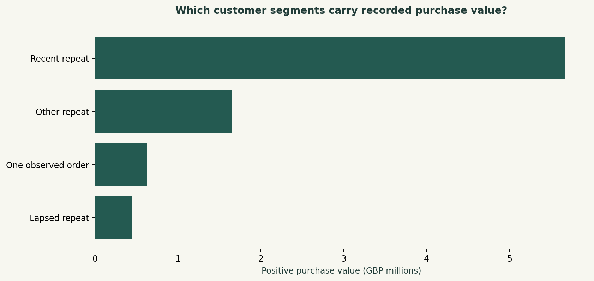
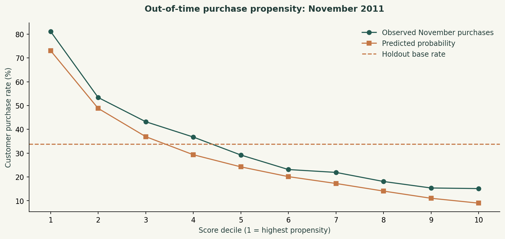

DANIEL UMEADI / SQL + PYTHON
Retail retention and repeat-purchase targeting
Customer history identified a high-propensity group with twice the overall repeat-purchase rate.
Executive summary
The analysis covered £10.03 million in positive purchase value and 4,297 identified customers. Only 23.7% of customers returned in the month after their first observed purchase. A logistic regression model identified a top-fifth customer group with a 67.3% November purchase rate, compared with 33.7% across the holdout population. The model also outperformed a simple recency ranking, making it a stronger candidate for prioritizing a retention campaign.
Business objective
The project evaluated customer retention and compared two ways of prioritizing existing customers for repeat-purchase outreach: a simple recency rule and a model using customer purchase history.
Finding 1 · Repeat purchasing was concentrated
The 1,143 customers classified as recent repeat buyers represented 26.6% of identified customers and £5.66 million in positive purchase value—67.5% of identified-customer value. By contrast, 1,538 customers had only one observed order. This concentration makes retaining active repeat buyers commercially important, while first-to-second-purchase conversion remains a distinct opportunity.

Finding 2 · The first repeat purchase was a weak point
Weighted month-one retention was 23.7% across cohorts with a complete following month. Most customers therefore did not purchase in the immediately following month. The cohort view separates this early drop-off from later purchasing patterns; a missed month does not by itself establish permanent churn.

Finding 3 · The model improved customer prioritization
Among 3,974 customers evaluated in November, the model’s highest-ranked 795 customers had a 67.3% purchase rate. Its 1.99× lift exceeded the recency rule’s 1.43× lift. Average precision was 0.634 and ROC AUC was 0.735. These results demonstrate improved ranking of likely repeat purchasers, rather than a measured increase caused by marketing.

Results at a glance
| Measure | November result |
|---|---|
| Customers evaluated | 3,974 |
| Top-ranked group | 795 |
| Overall purchase rate | 33.7% |
| Top-group purchase rate | 67.3% |
| Model targeting lift | 1.99× |
| Recency-rule lift | 1.43× |
Business recommendation
The model-ranked group is the preferred candidate for a controlled outreach pilot. A comparison against recency-based targeting and a no-contact group would establish whether outreach creates incremental purchases and margin. The analysis supports prioritization; it does not support issuing discounts to every high-propensity customer.
Analysis approach
SQL transformed invoice lines into customer orders, monthly cohorts and recency-frequency-monetary features. Python fitted logistic regression on August–October snapshots and evaluated November separately. Features used only information available before each snapshot. Monthly sales and cohort totals were reconciled against saved analytical outputs.
Data scope
UCI Online Retail, December 2010–November 2011. The partial December 2011 period was excluded. Positive purchase value is not profit or audited net revenue. Customers without IDs remain in sales totals but cannot enter customer-level analysis. Retention uses first observed purchase, and model performance reflects one seasonal holdout.